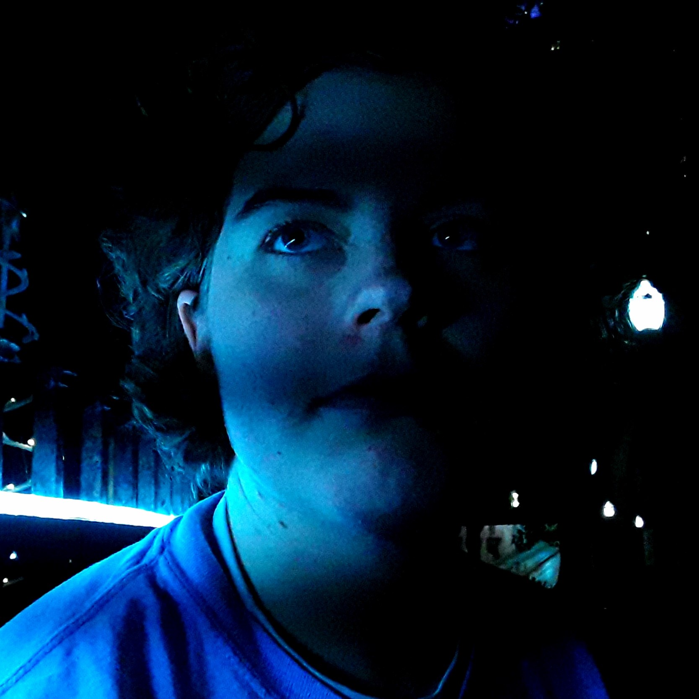

Ella Rand is a singer-songwriter from Hood River, OR. She began playing guitar in her Junior year of high school and fell in love with the instrument. Currently in college, she still writes about the issues that move her emotions. Throughout the album, Ella's songs acknowledge heaviness and hardship, and yet face them with sweetness and hope. Her songs bring an atmosphere of productive rest; the kind that allows a person to sit inside the boundaries of reality but also look beyond them. With moving melodies and carefully crafted lyrics, Ella brings her experiences close to the heart of her listeners.